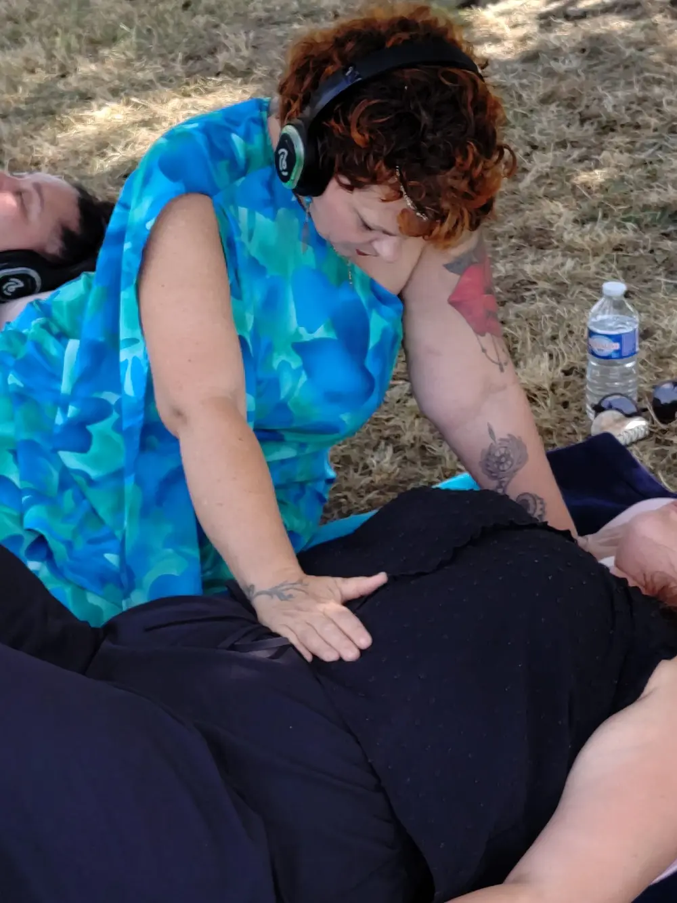

Aidez-moi à continuer d’œuvrersans sacrifier ma santé
Votre soutien peut m’aider à transformer mon activité, préserver mes forces et continuer à accompagner avec toute mon humanité.
Celles et ceux qui me connaissent savent combien j’aime mon métier et combien je m’y engage avec le cœur.
Depuis cinq ans, j’accompagne des femmes et des hommes à traverser leurs blessures, à retrouver confiance en eux et à se reconnecter à leur être profond. J’ai créé mes soins, mes hypnoses, mes voyages sonores et mes formations avec mon expérience, mon intuition, mon cœur et mon âme.
Aujourd’hui, j’ai besoin de vous parler avec sincérité.
Pourquoi j’ai besoin de vous
Continuer à transmettre,dans le respect de mon corps
Je suis atteinte d’une spondylarthrite ankylosante, une maladie inflammatoire chronique qui provoque des douleurs importantes et réduit progressivement ma mobilité. Mon traitement immunodépresseur entraîne également une fatigue profonde.
Les soins physiques, les déplacements, les longues journées et toutes les tâches nécessaires au développement de mon activité me demandent parfois une énergie que je n’ai plus.
Pourtant, mon envie d’accompagner est toujours là. Elle est même plus forte que jamais. Je sais que j’ai encore beaucoup à transmettre et je ne veux pas devoir choisir entre ma mission de cœur et ma santé.
Le projet
Faire évoluer mon activité grâce à Liberty Webi
Je souhaite rejoindre Liberty Webi, l’accompagnement créé par Jody Cavalié et Jean Hollaender. Pendant un an, cette formation m’aidera à structurer un accompagnement en ligne solide et durable.
Il sera destiné aux femmes, notamment entre 40 et 55 ans, qui se sont oubliées, traversent un tournant de leur vie et ressentent le besoin de se retrouver, de reprendre confiance en elles et d’oser enfin prendre leur place.
Un parcours riche et profondément humain
- Hypnoses et soins énergétiques
- Voyages sonores et exercices d’accompagnement
- Documents pratiques et cahier d’évolution
- Un cheminement pensé pour durer

Préserver l’essentiel
L’intelligence artificielleau service de l’humain
Cette formation va aussi m’apprendre à utiliser l’intelligence artificielle pour me seconder dans la partie non humaine de mon activité : la technique, l’organisation, la mise en forme, les outils numériques et certaines tâches répétitives.
Elle ne remplacera jamais mon écoute, ma présence, mon intuition ni la relation humaine au cœur de mes accompagnements.
Elle me permettra de préserver mes forces pour ce que personne ne peut faire à ma place : être présente, écouter, ressentir, transmettre et accompagner avec toute mon humanité.
Une somme précise, un objectif concret
À quoi serviront les 5 000 € ?
La somme financera l’intégralité de l’accompagnement Liberty Webi pendant un an : la formation, le suivi et les outils nécessaires à la création et au développement de mon projet en ligne.
Si l’objectif n’est pas atteint, chaque euro collecté financera une partie de la formation. Si les soutiens dépassent 5 000 €, le surplus sera consacré au matériel, aux logiciels professionnels et au développement du projet.
Merci, du fond du cœur
Chaque geste peut faire une différence
Accepter d’ouvrir cet espace de soutien n’a pas été évident. J’ai souvent été celle qui donne, qui soutient et qui accompagne. Aujourd’hui, j’accepte à mon tour de recevoir de l’aide pour donner une suite durable à tout ce que j’ai construit.
Chaque participation, quel qu’en soit le montant, contribuera directement à la naissance de ce projet. Et si tu ne peux pas participer financièrement, un partage peut déjà faire une véritable différence.
Pour vous remercier
J’offrirai aux donateurs une méditation audio, un album de musiques vibratoires que j’ai créé et des nouvelles régulières sur l’évolution du projet.
Choisissez votre manière de participer
Ensemble, faisons vivre ce projet
Avec toute ma gratitude et tout mon cœur,
Elysabeth Ramirez
L’Étoile de la Source 🤍
Prolonger le voyage
Découvrez la boutique de L’Étoile de la Source
Retrouvez l’univers d’Elysabeth, ses créations et les ressources qu’elle imagine pour vous accompagner sur votre chemin intérieur.
Découvrir la boutique ↗